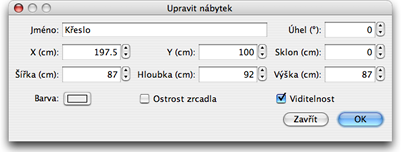

| Jak upravit nábytek | |||
Umístìní, velikost a úhel nábytku mù¾ete mìnit pohybem my¹i, pøípadnì pomocí menu Nábytek >
Upravit.... Je-li u¾ jeden kus nábytku v plánu vybrán, mù¾ete mìnit jeho velikost, umístìní a úhel pomocí ètyø indikátorù z nich¾ ka¾dý je v jednom rohu vybraného nábytku.
|

|
Posunete-li ukazatel my¹i na jeden z rohù s indikátory, mù¾ete okam¾itì indikátory pou¾ít stylem "Chy» a pou¾ij" a mìnit tak jim pøiøazené vlastnosti.
Kliknete-li nad nimi my¹í, zobrazí se pomocník ukazující hodnoty mìnìné vlastnosti. Nábytek mù¾e být mìnìn rovnì¾ prostøednictvím menu, které spustíte dvojtým kliknutím na vybraný nábytek v plánu projektu, nebo v seznamu nábytku, a poté zvolíte menu Nábytek > Upravit....  V menu nábytku lze mìnit jeho název, úhel otáèení, abcissa (X), umístìní (Y) jeho støedu, jeho levitaci, ¹íøku, hloubku, vý¹ku, barvu, viditelnost tak, ¾e stìny 3D modelu mohou být zrcadlové èi prùhledné. |
|